|
Time and location |
JN Tata Auditorium |
Hall A |
Hall B |
Hall C |
|
17/7/2018, Tuesday, 16:00-17:45 hrs |
Full duplex and LPWAN |
Caching in cellular networks |
Computational Imaging |
Estimation and information theory |
|
Session organiser |
Himal Suraweera / Rajesh Sundaresan |
Vinod Sharma / P Vijay Kumar |
Chandra Sekhar Seelamantula |
Himanshu Tyagi |
|
|
||||
|
|
||||
|
|
||||
|
|
||||
|
|
|
|
|
|
|
18/7/2018, Wednesday, 15:45-17:30 hrs |
Speech Processing |
Full-duplex communications |
Security and privacy |
Quantum information technology |
|
Session organiser |
Chandra Sekhar Seelamantula |
Himal Suraweera |
Himanshu Tyagi |
Varun Raghunathan |
|
|
||||
|
|
||||
|
|
||||
|
|
||||
|
|
|
|
|
|
|
19/7/2018, Thursday, 11:45-13:30 hrs |
5G and next generation networking |
Mm-wave and THz systems |
Deep learning |
|
|
Session organiser |
Rajesh Sundaresan |
K J Vinoy |
Chandra Murthy / David Wipf |
|
|
|
|
|||
|
|
|
|||
|
|
|
|||
|
|
|
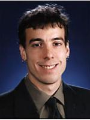
Title: AMP-Inspired Deep Neural Networks, with Applications to Compressive Random Access and Massive-MIMO Channel Estimation
Speaker: Phil Schniter
Professor
Dept. of Electrical and Computer Engineering, The Ohio State University
Abstract: Deep learning has gained great popularity due to its widespread success on many inference problems. In this talk, we consider the application of deep learning to the sparse linear inverse problem, where one seeks to recover a sparse signal from a few noisy linear measurements. For this problem, we present two neural-network architectures that decouple prediction errors across layers in the same way that the approximate message passing (AMP) algorithms decouple them across iterations: through Onsager correction. First, we present a "learned AMP" network that significantly improves upon Gregor and LeCun's "learned ISTA." Second, inspired by the recently proposed "vector AMP" (VAMP) algorithm, we propose a "learned VAMP" network that offers increased robustness to deviations in the measurement matrix from i.i.d. Gaussian. In both cases, we jointly learn the linear transforms and scalar nonlinearities of the network. Interestingly, with i.i.d. signals, the linear transforms and scalar nonlinearities prescribed by the VAMP algorithm coincide with the values learned through back-propagation, leading to an intuitive interpretation of learned VAMP. Finally, we apply our methods to two important problems in 5G wireless communications: compressive random access and massive-MIMO channel estimation.
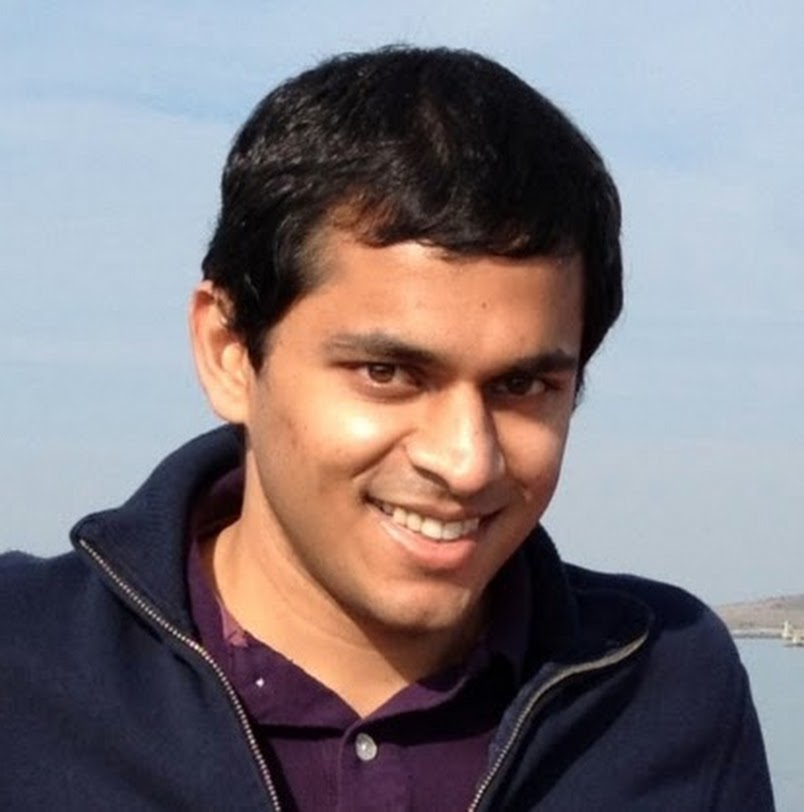
Title: Software-defined security for next generation networks
Speaker: Vyas Sekar
Associate Professor
ECE Department, Carnegie Mellon University
Abstract: The state of network security today is quite abysmal. Security breaches and downtime of critical infrastructures continue to be the norm rather than the exception, despite the dramatic rise in spending on network security. Attackers today can easily leverage a distributed and programmable infrastructure of compromised machines (or botnets) to launch large-scale and sophisticated attacks. In contrast, the defenders of our critical infrastructures are crippled as they rely on fixed capacity, inflexible, and expensive hardware appliances. This forces them into adopting weak and static security postures, as they face unpleasant tradeoffs between false positives and false negatives. Continuing along this trajectory means that attackers will always hold the upper hand as defenders are stifled by the inflexible and impotent tools in their arsenal. The goal of this project is to reverse this long-standing asymmetry and fundamentally change the dynamics of this attack- defense equation. Instead of developing attack-specific defenses, we focus on empowering defenders with the right tools and abstractions to tackle the constantly evolving attack landscape. To this end, we envision a new software-defined approach to network security, where we can rapidly develop and deploy novel in-depth defenses and dynamically customize the network’s security posture to the current operating context. Realizing this vision raises fundamental challenges that transcend conventional networking and security technologies and necessitates a radical rethink across the entire “stack”.
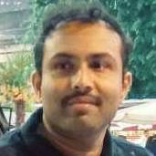
Title: Caching in Cellular Networks: A Learning Theoretic Perspective
Speaker: Bharath N. Bettagere
Assistant Professor
EE Department, IIT Dharwad
Abstract: Caching in cellular network is a promising technique to enhance the performance of 5G and beyond wireless systems. Higher performance is achieved by having faster access to the reqeusted information/files through caching of "popular files" in the memories of the Base Stations (BSs), Small BSs (SBSs) and even users. Regardless of the mechanism used to cache the files, the knowledge of the popularity of the files is essential. My talk focuses on a framework to analyze the performance of caching mechanism in a cellular network with non-stationary and possibly correlated requests for the files. Towards the end of the talk, I will touch upon the use of recommendation mechanism to enhance the performance of caching in future wireless cellular systems.
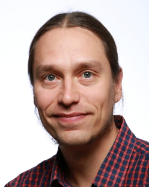
Title: Self-interference Modeling and Digital Cancellation Along with Full-Duplex Wireless System Analysis
Speaker: Taneli Riihonen
Assistant Professor(tenure track)
Tampere University of Technology
Abstract: My presentation highlights recent contributions on the inband full-duplex (IBFD) technology by providing an overview of the related research carried out at Tampere University of Technology, Finland, thus far. In particular, we have considered the challenges caused by the own transmitter, which is now a powerful source of self-interference, while also studying a potential system-level application of the IBFD technology. The former issue was analyzed by presenting advanced signal models for canceling the SI in the digital domain of the receiver. The signal models were derived such that they take into account the most significant analog impairments. As for the system-level application, we proposed a self-backhauling IBFD-capable access node that can serve users and backhaul data using the same frequency resources at the same time. This reduces transmit power consumption over reference schemes that rely on half-duplex operation. Altogether, the findings reported in Dani Korpi's doctoral dissertation (Dec. 2017) and highlighted herein demonstrate that the IBFD technology can significantly enhance the spectrum usage of the future wireless networks.
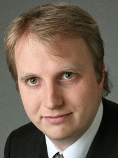
Title: Full-Duplex Communication with Imperfect Self-Interference Cancellation
Speaker: Andreas Burg
Assistant Professor
École Polytechnique Fédérale de Lausanne
Abstract: Full-Duplex communication promises a 2x increase in communication capacity under ideal condition. Unfortunately, this requires perfect suppression of the strong self-interference (SI) which is very difficult to achieve. Luckily, there are several alternatives, where full-duplex capability can be exploited even with imperfect SI suppression. In this talk, we will first summarize our work on SI suppression and point out the limitations. We will then focus on discussing options to exploit full-duplex capability with residual SI.
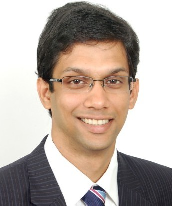
Title: Performance of LTE and 5G-NR cellular networks with full-duplex nodes
Speaker: Radhakrishna Ganti
Assistant Professor
IIT Madras
Abstract: Full-duplex nodes theoretically double the achievable per-link data rate. In this talk, we look at how full-duplex nodes fit in the existing wireless standards and if their impact on the network throughput. Current cellular standards are not designed for enabling full-duplex wireless communications. For example, in LTE, the eNodeB and all the UEs in a cell have to follow the same TDD configuration, and this makes full-duplex in-feasible. We will look at techniques to enable FD in the framework of existing 4G standard and look at network implications of FD. The current release of 5G standard does not have direct support for FD. However, it has several features like flexible-duplexing which might enable FD in the future releases. We will touch upon these features and discuss the gains of using FD in these networks.
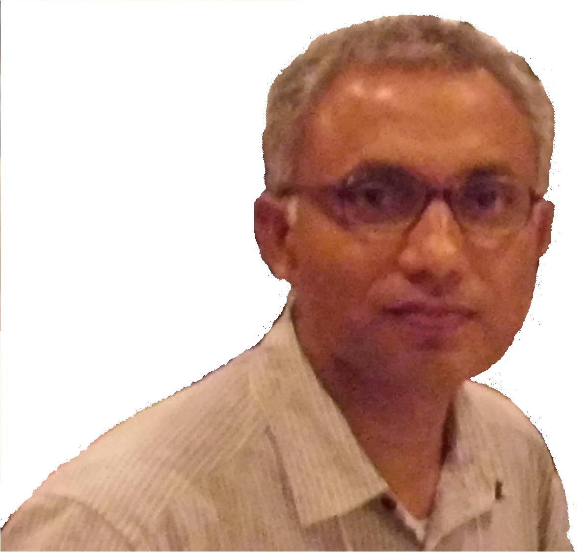
Title: RF energy transfer channel models for sustainable IoT
Speaker: Swades De
Professor
Department of Electrical Engineering
IIT Delhi
Abstract: Self-sustainable IoT node operation can be realized with the help of controlled radio frequency energy transfer (RF-ET). However due to significant energy loss in wireless propagation, there is a need for novel schemes to improve the end-to-end RF-ET efficiency. In this presentation, we will first discuss our experimental demonstration and findings on multihop RF-ET, where we will also motivate the need for developing a channel model for accurately characterizing the harvested DC power. We will present a new channel model which incorporates the effects of non-line of sight (NLOS) component along with the other parameters, namely, radiation pattern of transmit and receive antennas, losses associated with different polarization of transmitting field, and efficiency of power harvester circuit. We will present an optimization problem formulation by accounting for the effect of NLOS component to maximize the RF-ET efficiency, which cannot be captured by the Friis formula. Finally, we will discuss our field measurements based findings on the statistical parameters of multipath fading channel for short-range RF-RT.
Title: 5G New Radio-India's contribution to IMT-2020
Speaker: Kiran Kuchi
Professor
Department of Electrical Engineering
IIT Hyderabad
Abstract:
In this talk, I bring to light the key technical features and performance aspects of the recently released 5G technical specification, that is popularly known as, 5G New Radio (NR). We highlight the main differences with respect to 4G LTE, targeted deployment scenarios, new use cases etc. I will talk about enhanced mobile broadband (eMBB) with multi-Gbit user rates and the emerging Narrowband IoT (NB-IoT) networks that target ultra-low data rates with long-battery life that is on the order of 5-10 years.
Historically, India has not contributed to 3GPP family of standards till 5G. The scenario has changed about 3 years ago with the emergence of TSDSI-India's telecom SDO. Indian members of 3GPP, comprising of both academia and industry including a prominent operator have made significant technical contributions to the Phase-1 of 5G NR standard.
A new activity is kick started in TSDSI to amend the 3GPP 5G NR technical specifications. The aim is to introduce new features that are tailored for Indian market needs and domestic use cases such as support for large rural cells, a mandatory requirement set forth by ITU-R WP 5D as part of IMT2020 test criterion.
In this talk, we will introduce a new waveform titled "pi/2 BPSK with spectrum shaping" that is introduced in the uplink of 5G NR. This waveform potentially doubles the transmit power by allowing handsets to transmit the signal near PA (power amplifier) saturation. This is the only new waveform adopted in 5G which is targeted for coverage expansion. Our other proposals include the use of a non-linear precoding technique for massive MIMO, especially for TDD bands where we exploit channel reciprocity to obtain massive spectral efficiency gains over LTE based MIMO. I will conclude the talk with a description of a massive MIMO testbed developed by our group at IIT Hyderabad and the recent field trail results.
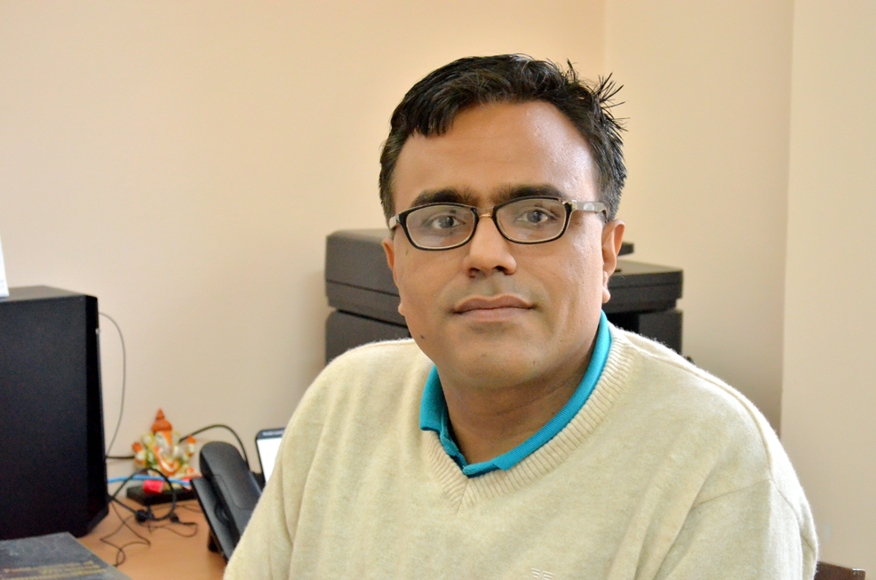
Title: QoS-Constrained Energy-Efficient AF Two-Way Full-Duplex Relaying With Massive Antennas
Speaker: Rohit Budhiraja
Assistant Professor
Department of Electrical Engineering
IIT Kanpur
Abstract: We consider a system where multiple full-duplex (FD) user pairs exchange information via a shared FD massive multiple-input multiple-output (MIMO) two-way relay. Most of the existing massive MIMO relaying works maximize the spectral efficiency. We maximize the global energy efficiency (EE) with quality-of-service (QoS) constraints, expressed as the rate required by the users. The EE maximization for the system considered herein has a non-convex objective. We solve this problem by first approximating the objective, which can be shown to be a concave-convex fractional function, and later by using Dinkelbach’s method.
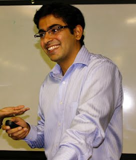
Title: Content Caching and Delivery with Partial Adaptive Matching
Speaker: Nikhil Karamchandani
Assistant Professor
Department of Electrical Engineering
IIT Bombay
Abstract: Caching of popular content during off-peak hours is a strategy to reduce the network load during peak hours. We consider a model where multiple caches store pre-fetched content and when users request files, they are matched to caches based on the request pattern. In particular, we focus on the case where caches are divided into clusters and each user can only be assigned to a unique cache from a specific cluster. This is a generalization of two popular models which are the extremes of the proposed model: one where each user is pre-attached to a cache irrespective of what it demands (static matching, popularly known as `coded caching') and the other where each user can be assigned to any cache in the entire network (fully adaptive matching). We show that neither the coded delivery strategy (approximately optimal when the user-cache assignment is pre-fixed) nor the uncoded replication strategy (approximately optimal when all caches belong to a single cluster) is sufficient for all memory regimes. We propose a hybrid solution that combines ideas from both schemes and that performs strictly better than both. Finally, we show that this hybrid strategy is approximately optimal in several scenarios and also discuss some of the open questions.
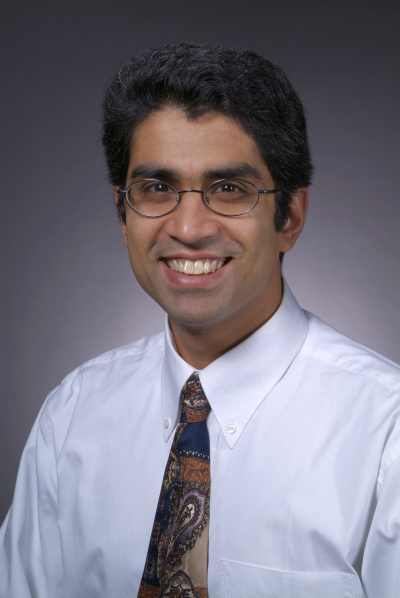
Title: Coded Caching Schemes with Reduced Subpacketization from Linear Block Codes
Speaker: Aditya Ramamoorthy
Professor
Department of Electrical and Computer Engineering and Mathematics
Iowa State University
Abstract: Coded caching is a technique that generalizes conventional caching and promises significant reductions in traffic over caching networks. However, the basic coded caching scheme requires that each file hosted in the server be partitioned into a large number (i.e., the subpacketization level) of non-overlapping subfiles. From a practical perspective, this is problematic as it means that prior schemes are only applicable when the size of the files is extremely large. In this work, we propose coded caching schemes based on combinatorial structures called resolvable designs. These structures can be obtained in a natural manner from linear block codes whose generator matrices possess certain rank properties. We obtain several schemes with subpacketization levels substantially lower than the basic scheme at the cost of an increased rate. Depending on the system parameters, our approach allows us to operate at various points on the subpacketization level vs. rate tradeoff. Joint work with Li Tang (Iowa State Univ.).
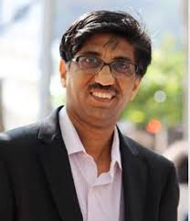
Title: Fog and Software Defined Networking paradigms in 5th Generation Wireless Communication Networks
Speaker: Abhay Karandikar
Director
IIT Kanpur
Abstract: The communication networks are undergoing profound changes due to many recent architectural innovations. Two of these innovative technologies, namely the Software Defined Networking (SDN) and Fog Computing have the potential to bring about paradigmatic/fundamental changes to the wireless communication network architecture and how services are delivered over them. In this talk, we elaborate on the architectural changes, these technologies are expected to bring about in 5th generation wireless communication networks (5G) and also explain how these technologies would complement each other in providing newer services to mobile users in future, which may not be possible today.
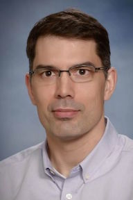
Title: Compressed Sensing Based Uncoordinated and Unsourced Multiple Access
Speaker: Jean-Francois Chamberland-Tremblay
Professor
Department of Electrical and Computer Engineering
Texas A&M University
Abstract: We will first review some connections between multiple access in wireless networks and compressed sensing. Then, we present a novel divide-and-conquer compressive sensing (CS) based approach for the uncoordinated and unsourced random access problem introduced by Polyanskiy. In the proposed scheme, each user's data is first encoded using an outer linear block code and the outer codewords are split into several sub-blocks. Each sub-block is encoded using a compressed sensing based encoder. At the receiver, the sub-blocks are decoded using compressed sensing decoder and their outputs are combined together using a low-complexity tree based algorithm. The proposed scheme outperforms existing practical coding schemes in the literature and is only approximately 4.3~dB away from the Polyanskiy's achievability scheme using a random Gaussian codebook. We will also present some results on the trade-off between complexity and gap from capacity for this scheme (Vamsi Amalladinne, Krishna Narayanan and Jean-Francois Chamberland).
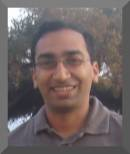
Title: Towards low power terabit per second optical interconnects
Speaker: Shalabh Gupta
Associate Professor
Department of Electrical Engineering
IIT Bombay
Abstract: With rapid growth in the use of cloud based applications and the Internet, the carbon footprint of data centers is becoming a major concern. The data centers are becoming more communications centric, and their switch interface speeds are expected to reach 1.6 terabit/second in near future. To keep up with power consumption budget, reliability and form factor requirements, the use of optical coherent techniques for future data center interconnects is being proposed. However, coherent links have traditionally used high-speed ADCs (analog-to-digital converters) followed by DSP (digital signal processing) for recovering transmitted data, which consumes a lot of power. To significantly reduce power consumption, the all analog domain signal processing approach, first proposed by our group, is now under serious consideration for such applications. In this work, we present an overview of the technologies being used for data center interconnects and the future trends (including the analog-domain signal processing approach). We also show how the use of silicon photonics can help further in achieving low power high-speed data center interconnects.
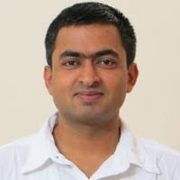
Title: Efficient measurement of high-dimensional quantum states
Speaker: Anand Kumar Jha
Assistant Professor
Department of Physics
IIT Kanpur
Abstract: The fact that a photon in a light beam can carry orbital angular momentum (OAM) in the integer multiples of ℏ has made OAM a very important degree of freedom for quantum information protocols. However, one of the major challenges faced in the implementation of OAM-based high-dimensional protocols is the efficient detection of quantum states in the OAM basis. In this talk, we will describe the existing techniques for measuring quantum states in the OAM basis and also discuss their limitations. We will then present a new experimental technique that we have developed in order to efficiently measure high-dimensional quantum states through just two intensity measurements.
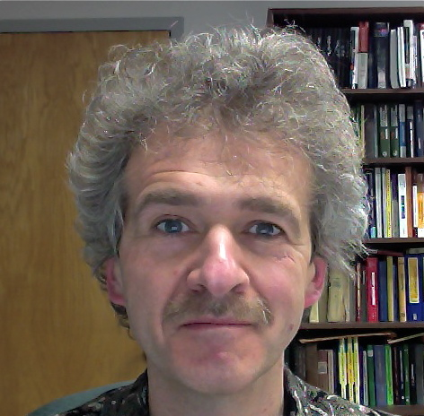
Title: Estimation of discrete distributions under local differential privacy
Speaker: Alexander Barg
Professor
Department of ECE/ISR
University of Maryland
Abstract: We consider minimax estimation of a discrete distribution under privacy constraints. A privatization scheme is applied to each raw sample independently, and the problem is to estimate the distribution of the raw samples from the privatized samples. Previous works were devoted to the high-privacy and low-privacy regimes. We propose a new family of privatization schemes and estimators that cover the entire range of parameters and improve upon the known schemes in the medium-privacy case. We prove that our procedure is asymptotically optimal for the ell-2 estimation loss and order-optimal for the ell-1 loss. Joint works with Min Ye (UMD/Princeton).
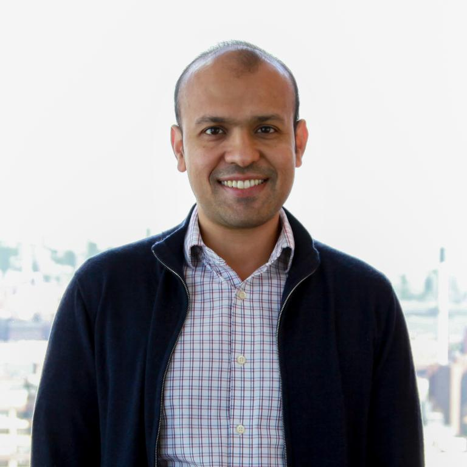
Title: Backdoored Neural Networks (BadNets)
Speaker: Siddharth Garg
Assistant Professor
Department of Electrical and Computer Engineering
NYU
Abstract: Deep neural networks are typically computationally expensive to train, requiring weeks of computation on many GPUs; as a result, many users outsource the training procedure to the cloud or rely on pre-trained models that are then fine-tuned for a specific task. The first part of this talk we will highlight how outsourced training introduces new security risks: an adversary can create a maliciously trained network (a backdoored neural network, or a BadNet) that has state-of-the-art performance on the user’s training and validation samples, but behaves badly on specific attacker-chosen inputs. We demonstrate backdoors on a U.S. street sign classifier that identifies stop signs as speed limits when a special sticker is added to the stop sign; the backdoor persists even if the network is later retrained for another task. The second part will discuss potential solutions for high-assurance outsourced training and execution of deep neural networks. Specifically, I will describe how secure delegation of computation techniques can be brought to bear on this problem.
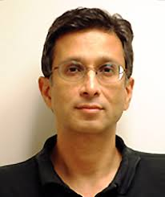
Title: Data Privacy for a $\rho$-Recoverable Function
Speaker: Prakash Narayan
Professor
Department of Electrical and Computer Engineering/Institute for Systems Research
University of Maryland
Abstract: This talk is based on joint work with Ph.D. student Ajaykrishnan Nageswaran. A user's data is represented by a finite-valued random variable. Given a function of the data, a querier is required to recover, with at least a prescribed probability, the value of the function based on a query response provided by the user. The user devises the query response, subject to the recoverability requirement, so as to maximize privacy of the data from the querier. Privacy is measured by the probability of error incurred by the querier in estimating the data from the query response. We analyze single and multiple independent query responses, with each response satisfying the recoverability requirement, that provide maximum privacy to the user. Achievability schemes with explicit randomization mechanisms for query responses are given and their privacy compared with converse upper bounds.
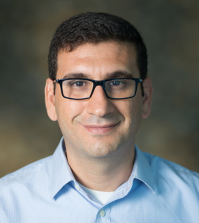
Title: Secret Sharing for Secure and Private Distributed Coded Computation
Speaker: Salim El Rouayheb
Assistant Professor
Department of Electrical and Computer Engineering
Rutgers University
Abstract: I will describe the communication efficient secret sharing (CESS) problem and introduce explicit constructions of CESS schemes, called Staircase Codes, which achieve optimal communication and read costs. Then, I will describe an application of Staircase codes to minimizing latency against stragglers in secure distributed coded computations. Time permitting, I will also talk about Staircase codes for constructing universally-robust private information retrieval schemes. This is a joint work with Rawad Bitar and Parimal Parag.
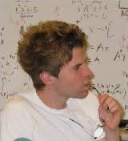
Title: Hidden Talents of the Variational Autoencoder
Speaker: David Wipf
Lead Researcher
Visual Computing Group
Microsoft Research Beijing
Abstract: Variational autoencoders (VAE) represent a popular, flexible form of deep generative model that can be stochastically fit to samples from a given random process using an information-theoretic variational bound on the true underlying distribution. Once so-obtained, the model can be putatively used to generate new samples from this distribution, or to provide a low-dimensional latent representation of existing samples. While quite effective in numerous application domains, certain important mechanisms which govern the behavior of the VAE are obfuscated by the intractable integrals and resulting stochastic approximations involved. Moreover, as a highly non-convex model, it remains unclear exactly how minima of the underlying energy relate to original design purposes. We attempt to better quantify these issues by analyzing a series of tractable special cases of increasing complexity. In doing so, we unveil interesting connections with more traditional dimensionality reduction models, as well as an intrinsic yet underappreciated propensity for robustly dismissing sparse outliers when estimating latent manifolds. With respect to the latter, we demonstrate that the VAE can be viewed as the natural evolution of recent robust PCA models, capable of learning nonlinear manifolds of unknown dimension obscured by gross corruptions.
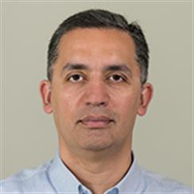
Title: Regularized Discriminant Analysis: A Large Dimensional Study
Speaker: Tareq Al Naffouri
Associate Professor
Electrical Engineering
King Abdullah University of Science and Technology
Abstract: We conduct a large dimensional study on discriminant analysis classifier with its three popular variants known as regularized LDA (R-LDA), regularized QDA (R-QDA) and regularized discriminant analysis (RDA). We start with the analysis of two special cases R-LDA and R-QDA, and finally generalize to RDA study. The analysis is based on the assumption that the data samples are drawn from a Gaussian mixture model with different means and covariances and relies on tools from random matrix theory (RMT). We consider the double asymptotic regime in which both the data dimension and training size with each class increases to infinity with fixed ratio. Under some mild assumptions, we show that the probability of misclassification error converges to a deterministic quantity which only depends on the class statistics and the data dimension. The result allows for a better understanding of the underlying classification algorithms in terms of their performances in practical large but finite dimensions. Further exploitation of the results permits to optimally tune the regularization parameters with the aim of minimizing the probability of misclassification error. The analysis is validated with numerical results involving synthetic as well as real data from the USPS dataset yielding a high accuracy in predicting the performances and hence making an interesting connection between theory and practice. This is joint work with Khalil Elkhalil, Xiaoke Yang, Abla Kammoun, and Slim Alouini.
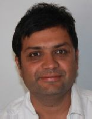
Title:Approximate optimality of separation in cache-aided wireless interference networks.
Speaker: Suhas Diggavi
Professor
Department of Electrical and Computer Engineering
University of California, Los Angeles
Abstract: We study the role of caches in wireless interference networks. We focus on content caching and delivery across a Gaussian interference network, where both transmitters and receivers are equipped with caches. We provide a constant-factor approximation of the system's degrees of freedom (DoF), for arbitrary number of transmitters, number of receivers, content library size, receiver cache size, and transmitter cache size (as long as the transmitters combined can store the entire content library among them). We demonstrate approximate optimality with respect to information-theoretic bounds that do not impose any restrictions on the caching and delivery strategies. The approximate DoF is achieved using a strategy that separates the physical and network layers, demonstrating the approximate optimality of such a separation architecture between the physical layer transmissions and caching in wireless interference networks. We also show that this separation architecture has an interface between the physical and network layer based on a particular message delivery structure that depends on the cache memories. As a side result, solving the caching problem required formulating and solving a new communication problem, the symmetric multiple multicast X-channel, for which we provide an exact DoF characterization.
This is joint work with Jad Hachem and Urs Niesen.
Title:Proving strong converse is difficult?
Speaker: Shun Watanabe
Associate Professor
Department of Computer and Information Sciences
Tokyo University of Agriculture and Technology, Japan
Abstract: The strong converse for a coding theorem shows that the optimal asymptotic rate possible with vanishing error cannot be improved by allowing a fixed error. The strong converse for multi-terminal problems typically requires some sophisticated techniques such as the blowing-up lemma, and it has been regarded as a difficult problem. In this talk, it is demonstrated that the strong converse for multi-terminal problems, including some open problems in the literature, can be proved by a quite simple argument. This is a joint work with Himanshu Tyagi.
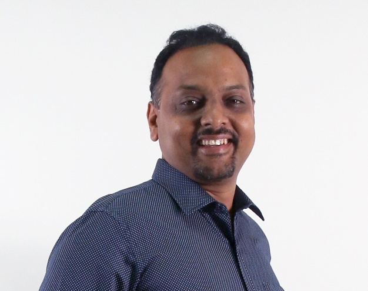
Title:Quantum Communication Using Coherent Rejection Sampling
Speaker: Rahul Jain
Associate Professor
Department of Computer Science
National University of Singapore
Abstract: Compression of a message up to the information it carries is key to many tasks involved in classical and quantum information theory. Schumacher provided one of the first quantum compression schemes and several more general schemes have been developed ever since. However, the one-shot characterization of these quantum tasks is still under development, and often lacks a direct connection with analogous classical tasks. Here we show a new technique for the compression of quantum messages with the aid of entanglement. We devise a new tool that we call the `convex split lemma', which is a coherent quantum analogue of the widely used `rejection sampling procedure' in classical communication protocols. As a consequence, we exhibit new explicit protocols with tight communication cost for `quantum state merging' and `quantum state splitting'. We also present a port-based teleportation scheme which uses less number of ports in presence of information about input.
Very recently our framework has found applications in several important settings in quantum network theory, such as a quantum version of the Gel’fand-Pinsker channel; the quantum broadcast channel and to obtain a new achievability bound on quantum state redistribution, in terms of smooth-max information and hypothesis testing relative entropy. Convex-split lemma has also found applications in the context of catalytic decoupling; privacy in quantum communication (the wiretap channel); a generalized quantum Slepian-Wolf result ; a bound for the important and consequential task of measurement compression using classical shared randomness and to obtain optimal bounds on the classical capacity of entanglement-assisted compound channels.
Given the broad applicability of the convex-split technique as exhibited in these recent works, we expect more applications in quantum network theory in the future.
Talk based on: Quantum communication using coherent rejection sampling. Anurag Anshu, Vamsi Krishna Devabathini, Rahul Jain. Physical Review Letters (PRL), Vol. 119, Issue 12-22 September 2017.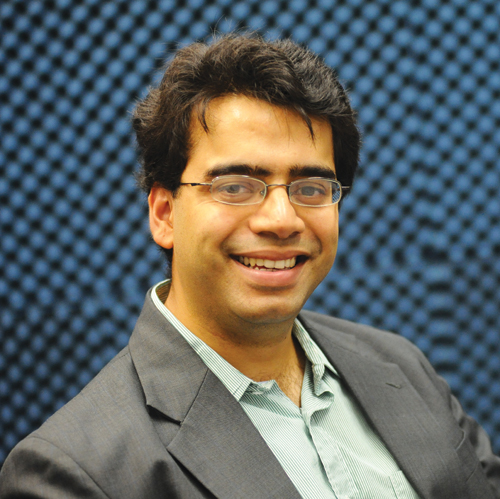
Title: [Full-duplex communications] Self-Interference Cancellation via Beamforming in an Integrated Full Duplex Circulator-Receiver Phased Array
Speaker: Harish Krishnaswamy
Associate Professor
Electrical Engineering
Columbia University, USA
Abstract:
This paper describes how phased-array beamforming can be exploited to achieve wideband self-interference cancellation (SIC) with no additional power consumption while minimizing link budget (transmitter (TX) and receiver (RX) array gain) penalty by repurposing spatial degrees of freedom. Unlike prior works that rely only on digital transmit beamforming, this work takes advantage of analog/RF beamforming capability that can be easily embedded within an integrated circulator-receiver array. This enables (i) obtaining SIC through beamforming on both TX and RX sides, thus increasing the number of degrees of freedom that can be used to obtain SIC and form the desired beams, while (ii) sharing the antenna array between TX and RX. A 65nm CMOS scalable 4-element full-duplex circulator-receiver array is demonstrated in conjunction with a TX phased-array implemented using discrete components. A tiled 8-element system shows (i) 50dB overall RF array SIC over 16.25MHz (WiFi-like) bandwidth (BW) with < 3.5/3dB degradation in TX and RX array gains, respectively, and (ii) 100dB overall array SIC including digital SIC, supporting +16.5dBm TX array power handling. (Authors: Mahmood Baraani Dastjerdi, Tingjun Chen, Negar Reiskarimian, Gil Zussman, Harish Krishnaswamy).
Title: [Mm-wave and THz systems] Enabling the Third Wireless Revolution through Transformative RF/mmWave Circuits, Systems and Wireless Communication and Sensing Paradigms
Abstract: Over the past 30 years, we have reaped the benefits of two wireless communication revolutions, which have had significant social and economic impact. The period from 1990-2000 saw the mobile wireless communication revolution, as cellular mobile telephony enabled human beings across the globe to be instantly connected with each other. The period from 2000 to the present day is witness to the mobile wireless data revolution, as 3G and 4G networks have brought the Internet to our fingertips. However, as massive as the amount of data that exists on the Internet is, it pales in comparison to the amount of data inherently present in the constitution of our physical world. The next wireless revolution will be the mobile wireless-reality revolution, which will bring the physical world to our fingertips. RF, mmWave and terahertz communication, imaging and sensing devices will enable us to interrogate the physical world and create virtual or augmented worlds in ways that exceed and augment human sensory situational awareness. The wireless-reality revolution will require a quantum leap forward in our ability to control and manipulate the RF-to- THz electromagnetic spectrum, and in our ability to transmit, acquire, aggregate and process the associated data.
I will describe recent research on high-power and energy-efficient millimeter-wave power amplifiers, transmitters and large-scale phased arrays that have drawn interest for next-generation 5G cellular networks. I will also describe recent work on extreme-bandwidth (>20Gbps) communication links at millimeter-waves for applications such as virtual and augmented reality. I will also briefly cover other novel wireless communication paradigms, including massive MIMO and full-duplex wireless, that enable extremely-high spectral efficiencies and data rates at lower RF frequencies. I will also talk about ongoing efforts towards the realization of city-scale testbeds that deploy advanced wireless hardware supporting mmWave, massive MIMO and full-duplex operation, enabling higher-layer systems research for the first time at city scales.
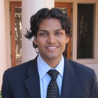
Title: Non-Destructive Testing using THz imaging
Speaker: Bala Pesala
Senior Scientist
Central Electrical and Electronics Engineering Research Institute
and
Assistant Professor
Academy of Scientific and Innovative Research
Abstract: Recent advances in THz sources and detectors have enabled rapid scanning imaging systems suitable for various industrial applications. In addition, most dry materials including plastics, composite materials have low absorption in the THz range. Hence, THz imaging has emerged as an optimal technique for Non-destructive testing and evaluation providing good spatial resolution and penetration depth. In this talk, I will discuss state -of-the art THz systems for NDE applications and our work related to defect detection in cement and FRP materials.
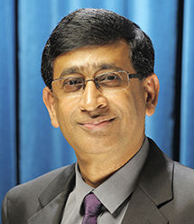
Title: Communication and Systems at Millimeter and Terahertz Waves
Speaker: Goutam Chattopadhyay
Senior Research Scientist
Jet Propulsion Laboratory
NASA, USA
Abstract: The millimeter-wave and terahertz frequency spectrum of the electromagnetic waves have mostly been used for high-resolution spectroscopic and radiometric studies for astrophysics, anetary science, and Earth science applications. However, in recent years, it has attracted significant interest among researchers for applications ranging from ultra-fast wireless communications to miniaturized high-resolution imaging radars, medical imaging, and imaging systems for collision avoidance and navigation. Millimeter-wave and terahertz frequencies provide enormous bandwidth compared to low-microwave frequencies. As a result, this band is very attractive for wireless communication systems. The current generation of wireless communication systems such as 4G/LTE is increasingly becoming inadequate due to the high data transfer demand, particularly for highresolution video transmissions. Millimeter-wave and terahertz frequencies could provide the paradigm shift needed for the next generation of wireless communication systems. Even though they provide significant bandwidth advantage, millimeter-wave and terahertz waves have their own set of challenges for use in a communication system. Due to the highly directive nature of these waves, line of sight at terahertz frequencies, they create a severe lack of angular diversity for communication applications. To overcome these, new technological breakthroughs are needed. In this talk, an overview of current technology roadmap for the insertion of communication systems using millimeter-wave and terahertz frequency based architecture will be discussed. High data rate terahertz communication systems demonstrated so far has used simple on-off-keying or similar modulation schemes. This talk will also discuss why it is so difficult to implement more popular schemes such as QPSK or QAM. The component technology and system integration for such communication systems will also be presented. The research described herein was carried out at the Jet Propulsion Laboratory, California Institute of Technology, Pasadena, California, USA, under contract with National Aeronautics and Space Administration.
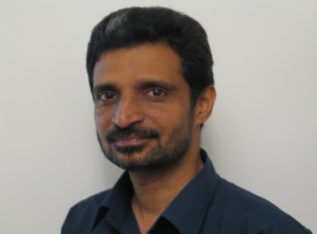
Title: Periodic EM configurations and their applications for next generation Wireless systems.
Speaker: P.H. Rao
Scientist
SAMEER-Centre for Electromagnetics,
Chennai
Abstract: The talk introduces the importance of periodic configurations in Electromagnetic and Antenna applications. Periodic configurations for both radiating systems (Antennas) and circuit applications (Mixed signal systems) will be discussed. Metamaterials also known as Left Handed (LH) materials, exhibit simultaneous negative permittivity and permeability. These properties can be applied to several electromagnetic areas to improve the system performance. Metamaterials application in antennas, circuit miniaturization, and phase delay lines are considered for the next generation systems. Implementation of Split ring resonators (SRRs) and Complementary Split ring resonators (CSRRs) in circuit miniaturization and Flat lens design for MRI application will be demonstrated. The electromagnetic band gap (EBG) structures will be analyzed for various configurations. The design and applications of these EBGs will be demonstrated with practical realizations. The concept of CSRR loaded miniaturized Butler Matrix, low SLL array Antennas and Rotman Lens based Switched beam configurations will be introduced. Design approaches of Reflectarray antennas, Fabrication Techniques will be dealt in detail.
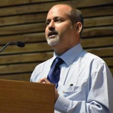
Title: Signal Processing Problems in Cyber Physical System Security.
Speaker: Sandeep K. Shukla
Poonam and Prabhu Goel Chair Professor
Interdisciplinary Center for Cyber Security and Cyber Defense of Critical Infrastructure
IIT Kanpur
Abstract: Power Grid, Manufacturing Automation Systems, Water/Sewage Systems, and other example of Cyber Physical Systems (CPS) have two interacting components, a physical one whose dynamics is governed by the laws of physics and a cyber part that includes sensors, actuators, control systems, and network that carries information between the sensors/actuators to control and back. There are many ways a cyber-attacks can happen in such systems through vulnerabilities in the cyber components. However, one can consider more potent attacks by changing the dynamics of the system through false data injection, or by overtaking the cyber components through malware injection. However, in order to reduce the possibility of an ongoing attack to be thwarted by anomaly detection systems, the attacker needs to know more about the state of the system, as well as the topology of the system. The most powerful attacks are those which can control a few sensors, or apply man-in-the middle attack to capture sensor measurements to estimate the state of the system, and/or the topology of the system. Systems whose state can be adequately estimated or whose topology and parameters can be effectively estimated through minimal amount of snooping on sensor measurements are most vulnerable to such attacks which cannot be easily detected through standard anomaly detection in the physical dynamics of the system. In this talk we will talk about a few problems that are germane to signal processing and statistical estimation techniques – which arise for the attackers when trying to estimate state or topological structure/parameters through minimal sensor snooping. We will also discuss some of the techniques relevant to detect or thwart such attacks. The talk will be more tutorial in nature than new research work.
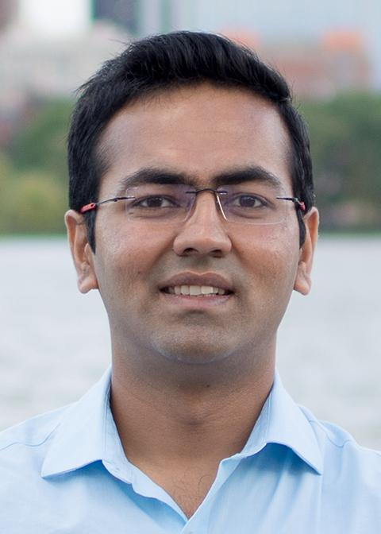
Title: Full Duplex Wireless: A solution for next generation or not yet?
Speaker: Dinesh Bharadia
Assistant Professor
Department of Electrical and Computer Engineering
University of California San Diego
Abstract: Full Duplex radios is an ability to transmit and receive on the same spectrum, more fundamentally it revolutionizes the physical layer. In recent times, full duplex radios have undergone successful commercial field trials by Tier 1 Telecom. However, even with the lowest layer of networking stack would undergo a major shift, there hasn't been a domino effect on higher layers. The question still remains unanswered is how can we use full duplex? Is it just 2x throughput only? I would present some future directions of using full-duplex radios and building full duplex networks.
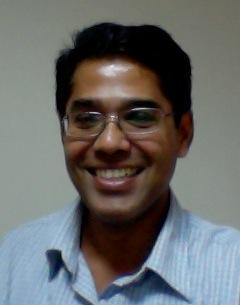
Title: The theory and practice of quantum key distribution (QKD)
Speaker: Anil Prabhakar
Professor
Department of Electrical Engineering
IIT Madras
Abstract: As classical cryptosystems are rendered vulnerable with the advent of quantum computers, quantum key distribution (QKD) promises unconditional security based on fundamental properties of quantum states. While several QKD schemes have been demonstrated experimentally, realising the full potential of QKD for regular commercial applications remains a challenge. In this talk, we will focus on Differential-phase-shifted QKD, which is based on the B92 protocol and is most amenable for implementation over conventional fibre-optics networks. We will compare and contrast variants of DPS-QKD in terms of their secure key rate and ease of implementation. Finally, we will present the DPS-protocol being implemented at IIT-Madras and QuNu, Bangalore. We will discuss the details of the experimental set-up, the resulting quantum bit error rate (QBER), and the practical challenges involved in improving the secure key rate.
[Joint work with Dr. Prabha Mandayam, IIT Madras]
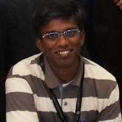
Title: Recent Developments in IOT: A system perspective
Speaker: Ganesan Thiagarajan
Director and CTO
MMRFIC Technology Private Limited, Bangalore
Abstract: This talk summarizes recent developments in all four main components of IoT namely, connectivity, hardware, internet and (software) platform. The terms IoT and IoT platform are differentiated and the developments in these above mentioned four components are categorized. As a case study, the latest developments in NB-IOT standards (3GPP Release 13 and 14) are reviewed in the context of PHY layer and network features. The various IoT standards are compared from a system point of view and application point of view. Finally, future trends in IoT is presented from a system architect's point of view.
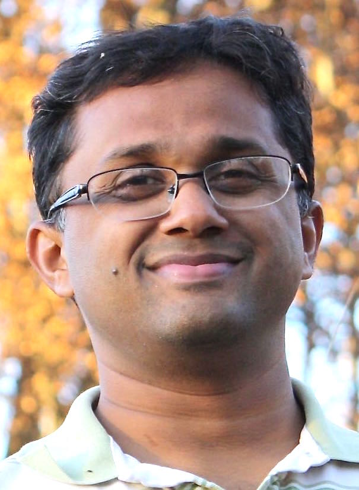
Title: Structured low-rank algorithms: a novel framework for super-resolution recovery of curves and images
Speaker: Mathews Jacob
Associate Professor
Department of Electrical and Computer Engineering
University of Iowa
Abstract: The recovery of signals from very few and noisy measurements using compactness priors had been an active area of research in the compressed sensing . Most of the current methods rely on discrete signal models, which are not ideally suited for the super-resolution setting, where the primary objective is to improve the resolution beyond the limits of physical imaging systems. The main focus of the talk is to introduce a novel framework for the continuous domain recovery of images and curves from few of their measurements. The proposed structured low-rank methods are ideally suited to recover signals that are support limited on curves or surfaces in high dimensions, unlike current atomic norm minimization methods that are designed for the recovery of Diracs or spikes. The similarity of the resulting algorithms to widely used kernel methods and graph Laplacian regularization will also be covered. The application of the framework will be demonstrated in several applications including MRI and optical imaging.
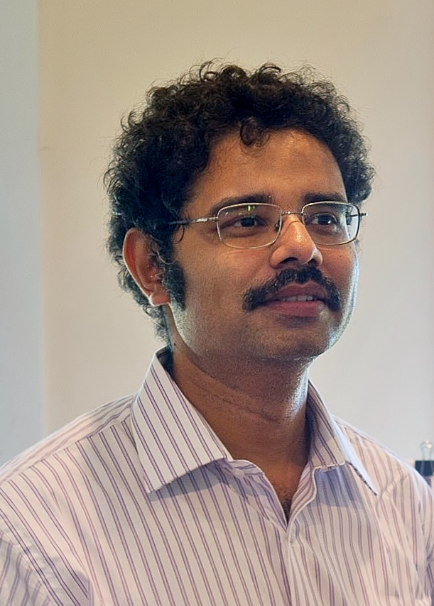
Title: Solving Inverse Computational Imaging Problems using Deep Pixel-level Priors
Speaker: Kaushik Mitra
Assistant Professor
Department of Electrical Engineering
IIT Madras
Abstract: Signal reconstruction is a challenging aspect of computational imaging as it often involves solving ill-posed inverse problems. Recently, deep feed-forward neural networks have led to state-of-the-art results in solving various inverse imaging problems. However, being task specific, these networks have to be learned for each inverse problem. On the other hand, a more flexible approach would be to learn a deep generative model once and then use it as a signal prior for solving various inverse problems. We show that among the various state of the art deep generative models, deep autoregressive models are especially suitable for our purpose. We demonstrate the efficacy of our proposed approach in solving three computational imaging problems: Single Pixel Camera (SPC), LiSens and FlatCam.

Title: SPToF: Signal processing for Time-of-Flight cameras
Speaker: Adithya Pediredla
Doctoral Student
Department of Electrical and Computer Engineering
Rice University
Abstract: During the last decade, we have been witnessing the continued development of new time-of-flight imaging devices, and their increased use in numerous and varied applications. Unfortunately, due to the expensive hardware setups, very few signal processing techniques exist for designing the imaging and image processing pipelines for the time-of-flight cameras. To mitigate these problems, we propose a physics-based rendering technique that can accurately simulate the functionality of the time-of-flight devices for arbitrary geometries, scene BRDFs, and light bounces. T he proposed rendering algorithm efficiently samples paths with a predetermined length and is tailored towards simulating different time-of-flight sensors, such as gated and transient cameras. We use our open-source implementation to demonstrate improved rendering performance in a variety of scenes. We also show two signal processing-based applications of our renderer: (1) to reconstruct planar facets beyond line-of-sight, (2) to design depth-selective codes for continuous-wave time-of-flight camera.
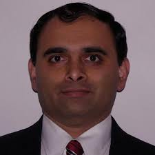
Title: Sparsity Assisted Optical Phase Imaging
Speaker: Kedar Khare
Assistant Professor
Department of Physics
IIT Delhi
Abstract: Imaging phase of an optical wavefront is a challenging problem since all detectors at visible wavelengths only respond to energy or amplitude of light waves. Phase however carries a lot of meaningful information that is useful for a number of imaging applications. Single shot phase imaging poses severe data incompleteness problems for both interferometric as well as non-interferometric imaging configurations. For example the spatial resolution in single-shot off-axis interferometric data is considered limited by overlap of the dc and cross terms in Fourier space. Non-interferometric iterative phase retrieval from Fourier magnitude data for complex valued objects on the other hand is considered difficult due to the twin stagnation problem. In this talk I will describe our work on incorporating sparsity ideas for phase imaging that allows us to outperform several “text-book” limitations on resolution, noise and data incompleteness issues. Our recent efforts on converting the new algorithmic ideas for applications such as live cell microscopy and pathological diagnosis will also be discussed. Overall I will show that the computational imaging framework can question several long-held Physics limits on phase imaging and in the process enable a number of low cost imaging devices.
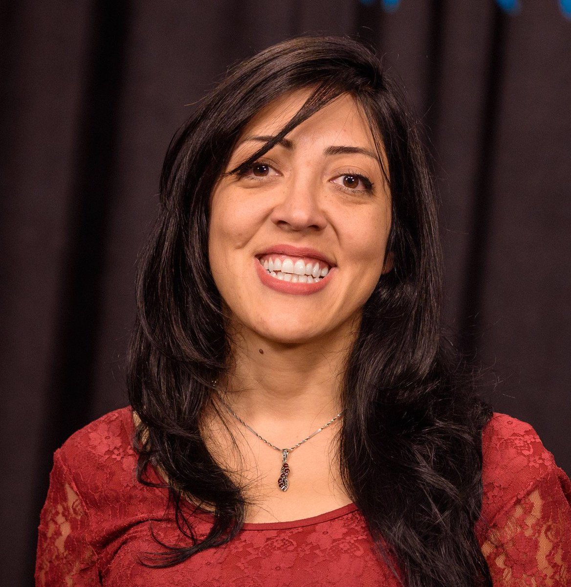
Title: Gaussian Process bandits with adaptive discretization
Speaker: Tara Javidi
Professor
Department of Electrical and Computer Engineering
University of California San Diego
Abstract: In this paper, the problem of maximizing a black-box function real-valued function f with domain X is studied in the Bayesian framework with a Gaussian Process (GP) prior. In particular, a new algorithm for this problem is proposed, and high probability bounds on its simple and cumulative regret are established. The query point selection rule in most existing methods involves an exhaustive search over an increasingly fine sequence of uniform discretizations of X. The proposed algorithm, in contrast, adaptively refines X which leads to a lower computational complexity, particularly when X is a subset of a high dimensional Euclidean space. In addition to the computational gains, sufficient conditions are identified under which the regret bounds of the new algorithm improve upon the known results. Finally an extension of the algorithm to the case of contextual bandits is proposed, and high probability bounds on the contextual regret are presented. This is joint work with Shubhanshu Shekhar.

Title: [Speech Processing] Is there more to the spectrogram than meets the eye?
Speaker: Chandra Sekhar Seelamantula
Associate Professor
Department of Electrical Engineering
IISc Bangalore
Abstract: The spectrogram, which is the workhorse of time-frequency analysis, is an indispensable tool in the analysis of speech signals. It normally comes in two flavours -- the narrowband one, which has a high spectral resolution and the wideband one, which has a high temporal resolution. We shall consider the narrowband spectrogram and argue that it is actually a 2D modulated signal. We then introduce a new tool to carry out the demodulation, namely, the Riesz transform, which is a higher dimensional extension of the well known Hilbert transform. We show how the Riesz transform allows for a neat separation of the spectrogram into the 2D baseband signal and the high-frequency carrier components. The baseband signal turns out to be the vocal tract spectrogram and the carrier is effectively constituted by the pitch harmonics. The demodulation perspective gives deeper insights. For instance, it allows for a categorization of the time-frequency plane into nearly periodic and aperiodic components. The aperiodicity map thus obtained could be used to separate the speech signal into its voiced and unvoiced constituents. Similarly, analyzing the orientation of the pitch tracks allows for a richer characterization of the excitation and intonation. We also show how the various hidden aspects of the spectrogram could be used in speech synthesis.
Title: [Deep learning] Deep Learning Meets Sparse Coding
Abstract: We develop specialized deep neural networks for sparse coding. Our approach relies on unrolling proximal gradient algorithms, which entail computations similar to that performed by a neural network. For sparse coding, we set the weights and biases of the network as prescribed by the iterative shrinkage-thresholding algorithm (ISTA) and model the nonlinear activation functions using a linear expansion of thresholds (LETs), which has been shown to be successful in image processing applications. The network thus constructed is referred to as LETnet. We demonstrate that the LET parametrization is parsimonious, induces a rich variety of sparsity encouraging regularizers, and effectively learns the sparsity prior from a training dataset. Further, the number of parameters to be learned in LETnet does not grow as the signal dimension increases. Improvements over LETnet are achieved using two mechanisms: (i) employing a second-order learning algorithm with superior convergence behavior; and (ii) building a deep residual network inspired by FISTA, an accelerated version of ISTA, having a superior convergence rate. We demonstrate successful application to super-resolution localization microscopy.
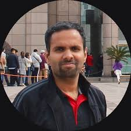
Title: Unsupervised Representation Learning for Speech Signals.
Speaker: Sriram Ganapathy
Assistant Professor
Department of Electrical Engineering
IISc Bangalore
Abstract: Unsupervised learning is the branch of machine learning that deals with discovery of the hidden structure from large amounts of raw unlabeled data. While the current deep learning paradigms are built using large labeled datasets and significant compute power, the evidence from human studies suggest that efficient learning can be achieved using unsupervised learning with a small amount of supervision. In this talk, an approach for deriving acoustic sub-word units in a language independent fashion is explored for an unsupervised term discovery problem. This task involves the extraction of audio representations that are highly similar for the same words spoken by two different speakers. Several applications in zero resource speech processing will be discussed.
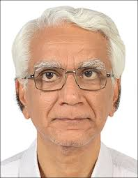
Title: Quantum Communications: Concepts and Prospects
Speaker: Apoorva Patel
Professor
Centre for High Energy Physics
IISc Bangalore
Abstract:
How do quantum communications differ from classical ones? What advantages
do they offer? What resources do they require? What is their technological
status at present? What is the road map for the future? I will attempt to
answer these questions with an overview of the subject, together with
descriptions of basic tasks and simple examples.
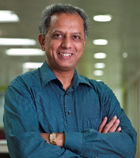
Title: Automatically derived acoustic sub-word units: Some paradigms
Speaker: V. Ramasubramanian
Professor
IIIT Bangalore
Abstract: As part of this special session organized as a felicitation of Prof. T. V. Sreenivas, IISc, on the occasion of his retirement, this talk will focus on my work done in collaboration with him and his students during 2000-04 in the framework of automatically derived acoustic sub-word units (AD-ASWU). This framework was first proposed at Bell Labs in the late 1980s and early 90s for automatic speech recognition as an efficient data-driven alternative to the more conventional notion of linguistically defined units such as phonetic-units. This framework, however, was relegated to the background, amidst the progress of the then de facto HMM based acoustic modeling of linguistically defined sub-word units, and its use in LVCSR techniques and applications. Here, I will outline the renewed attention we brought to this AD-ASWU framework in 2000-04, to examine the efficacy of ‘speech units’ which are automatically derived and modeled. This talk will highlight our contributions from this work (reported in the flagship ‘speech’ conferences Interspeech ’02, ’03, ’05 & ICASSP ’02, ’03, ’04, ’05) which applied the concept of AD-ASWUs to diverse problem spaces yielding varied formulations such as, a) automatically derived units for low bit- rate speech coding, b) stochastic pronunciation modeling for automatic speech recognition in the form of ergodic HMMs of acoustic sub-word units, and c) spoken language identification by acoustic sub-word unit based ergodic-HMM modeling of spoken languages. I will close this talk by pointing to the continued relevance of the notion of AD-ASWUs in a very recent work on weakly supervised acoustic sub-word unit discovery (and modeling) in speech recognition for low resource settings and far more importantly point to its potential role in the emerging trends of end-to-end speech recognition in deep-learning paradigms (e.g. RNN/LSTM based sequence-to-sequence learning, CTC loss functions etc.).

Title: Variant and invariant characteristics in speech articulation
Speaker: Prasanta Kumar Ghosh
Assistant Professor
Department of Electrical Engineering
IISc Bangalore
Abstract: Speech articulation varies across speakers for producing speech sounds due to the differences in their vocal tract morphologies, though the speech motor actions are executed in terms of relatively invariant gestures. While the invariant articulatory gestures are driven by the linguistic content of the spoken utterance, the component of speech articulation that varies across speakers reflects speaker-specific and other paralinguistic information. This talk will present a formulation to decompose the speech articulation from multiple speakers into the variant and invariant aspects when they speak the same sentence. Using the variant component as a representation, this talk will also present results that demonstrate the capability of the variant component for discriminating speakers.